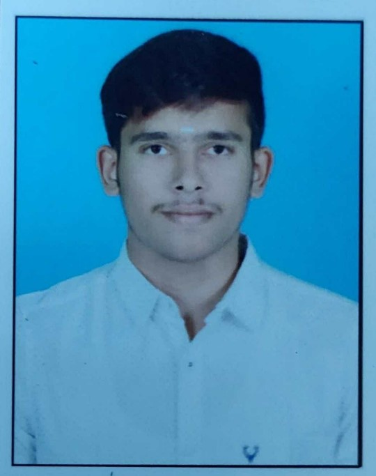

My Resume

Carrer Objective
To secure a challenging position in a
reputable organization to expand my learnings, knowledge, and skills.
Educational Qualification
Pursuing BE in Electrical and Electronics Engineering in Kongu
Engineering College, Perundurai with CGPA of 7.78(till 4 st semester).
Completed HSC in 2021 at Vikas Vidyalaya School, Tirupur with 85.08%
Completed SSLC in 2019 at Vikas Vidyalaya School, Tirupur with 80%
Skill Set
Language Known: C, Basics of Java and Python
Software knowledge: Basics of MATLAB, Basics of ECAD
Industrial Training
Undergone 7 days training at ECI system private limited 17.08.2022 to
24.08.2022 located at Coimbatore.
Area Of Interest
Problem solving through programming
Paper Presentation
Won 3nd prize for paper on ACTIVATED CARBON SYNTHESIS FROM TEXTILE WASTE
SLUDGE in MECHANICA'23 at Indian Institute Technology.
Project Presentation
Presented a project on the medical mirror at PSG college of technology
Coimbatore.
Won 1st prize for project on energy audit in energy ambassador program
2022 at Dr. N. G. P Institute of technology, Coimbatore.
Won 1st prize for project on Vending machine in POC 2023 in Kongu
engineering college.
Personal Profile
Date of birth : 13.03.2004
Father’s name : Mr. S. Sivaperumal
Mother’s name : Mrs. S. Pushpa
Languages : Tamil, English
Hobbies : Playing Football, Cooking
Address : 7/75 Pachankattupalaym Arulpuram, Veerapandi (Po), Tirupur – 641
605.